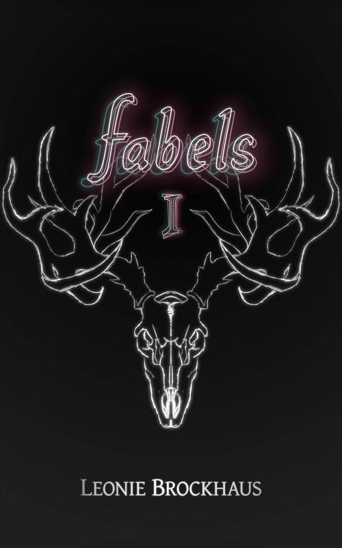

01 / Roman
Fabels I
ISBN: 978-3754-3005-89
Familie Lenning ist das Einzige, was zwischen den Angstrehen und Halifax steht. Nur durch aufwendige Patrouillen verhindern sie, dass dieses Fabel in den kanadischen Städten auf Beutezug geht. Nach einer Verletzung am Bein sind diese Außeneinsätze für Alex vorbei. Sie wird an eine Universität für Fabel-Technologie am anderen Ende der Welt geschickt und soll erst zurückkehren, wenn sie ihrem Vater wieder nützlich sein kann. Erst später beginnt Alex zu verstehen, wie eng ihre Geschichte und die sich verändernde Welt der Fabels wirklich miteinander verbunden sind.
oder in deinem lokalen Buchhandel bestellen.